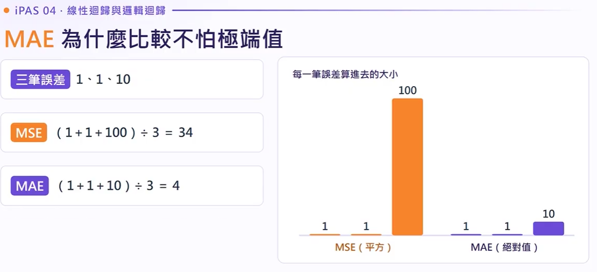
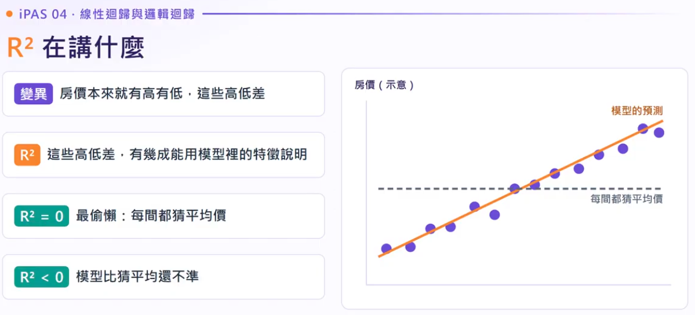
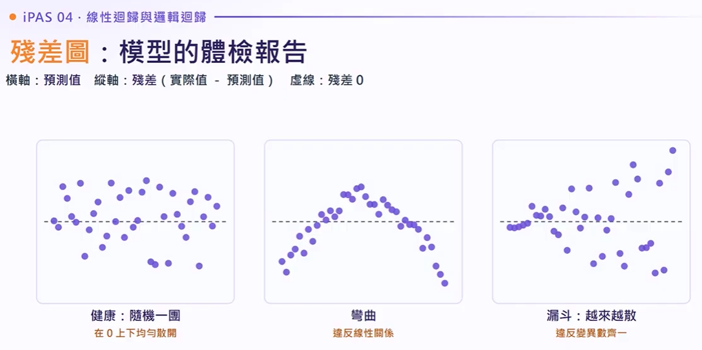
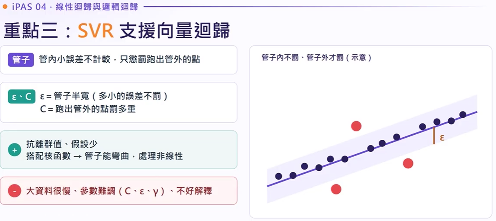
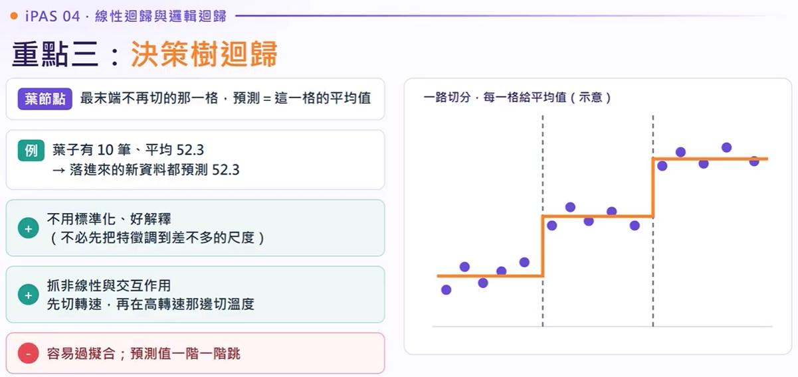
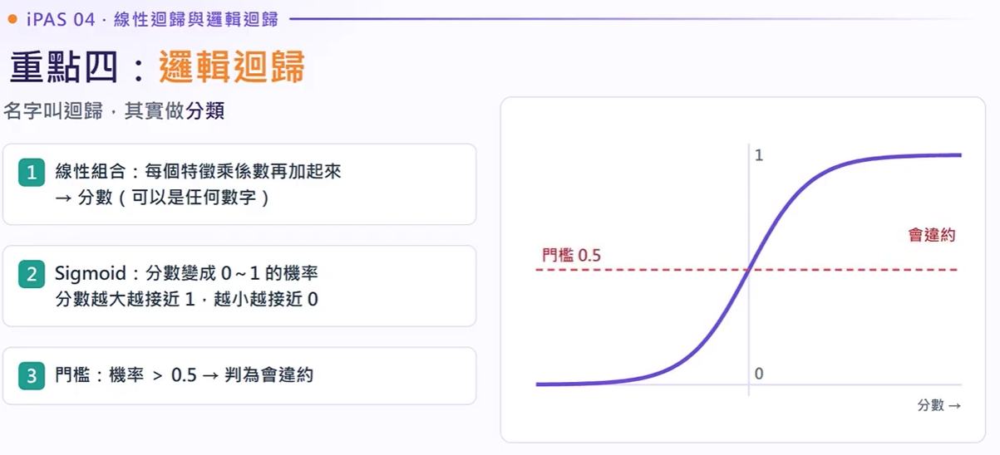
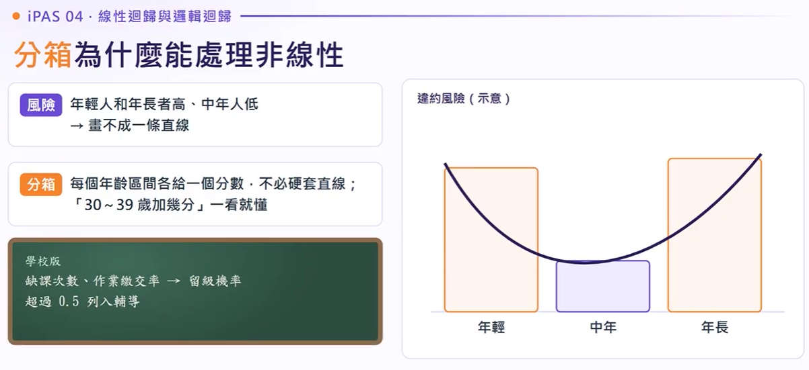

- 06 - 【iPAS AI應用規劃師_中級科目三 系列 EP04】線性迴歸與邏輯迴歸｜帶你看懂線性迴歸、殘差圖、SVR 和邏輯迴歸。
講義色彩架構引導
全章考點地圖與歷屆試題導覽
掌握監督式演算法四大核心：線性迴歸、殘差假設、SVR/決策樹與邏輯迴歸信用評分卡。
全章考點地圖：監督式演算法（迴歸與分類）
線性迴歸與決定係數 ($R^2$)
連續數值預測的基石，以最小平方法（OLS）求取全域最佳權重係數。
目標是找出一組權重參數 $w_1, w_2, \dots$ 與截距 $b$，使得所有樣本的預測誤差平方總和（$\sum (y_i - \hat{y}_i)^2$）達到最小值。各變數係數具有高可讀性，代表其他條件不變下，特徵每增加 1 單位，目標值平均變化的數值。
重點一：線性迴歸原理與最小平方法 (OLS)
重點一：迴歸怎麼評估：五個指標總覽
MAE (平均絕對誤差)
$\text{MAE} = \frac{1}{n}\sum |y_i - \hat{y}_i|$
直接計算真實誤差差距的絕對值平均。即使資料集內有偶發極端值，也不會引發數值暴增。
MSE & RMSE
$\text{RMSE} = \sqrt{\frac{1}{n}\sum (y_i - \hat{y}_i)^2}$
先平方後平均。誤差為 10 的點其懲罰權重高達 100，特別適合對大失誤容忍度極低的工業場景。
$R^2$ 決定係數
$R^2 = 1 - \frac{\sum (y_i - \hat{y}_i)^2}{\sum (y_i - \bar{y})^2}$
表示目標變數的「總變異」中有幾成可由模型的特徵解釋。當模型比全部預測平均值還差時，$R^2$ 會為負值。
重點一：MAE 為什麼比較不怕極端值

重點一：$R^2$ 在講什麼（變異高低差與基線預測）

正確意義：85% 的目標變異可以被此模型解釋！
絕對不是「分類準確率 85%」（迴歸預測連續值，沒有對錯命中率），也不是「誤差僅有 15%」，更與「95% 信心水準（信賴區間）」毫無統計關聯。此外，當盲目增加垃圾特徵時，普通 $R^2$ 仍會虛胖上升，必須改看調整後 $R^2$ (Adjusted $R^2$)。
重點一：為什麼要調整後 $R^2$（Adjusted $R^2$）
殘差圖：線性迴歸的體檢報告
線性迴歸成立的前提是五大統計假設。透過檢視預測值與殘差的散佈圖，能揪出潛在病灶。
重點二：五個假設神級口訣「線常獨變共」
重點二：殘差圖：模型的體檢報告

殘差圖體檢模擬器（Residual Diagnostics Simulator）
點擊下方病徵模式，即時觀察散佈分佈與考古題對應解讀
殘差均勻隨機散佈
殘差在 0 軸上下均勻無規律分佈，沒有特徵形狀。這表明模型的線性關係與同質變異數假設全部成立。
重點二：誤差獨立與多重共線性實務
重點二：題目訊號：殘差圖真題考點速解對照表
非線性迴歸：SVR 與決策樹
當資料存在曲線、極端雜訊或階層交互作用時，超越普通線性迴歸的兩大利器。
SVR（支援向量迴歸）
構建一個寬度為 $\pm \epsilon$ 的容許管道（$\epsilon$-tube）。管子內的小誤差完全不計損失，只懲罰掉在管道外的樣本。透過 RBF 核函數 能完美擬合平滑曲線，極度抗雜訊與離群值，但大數據量計算耗時且不直觀。
決策樹迴歸 (Decision Tree)
藉由二元條件不斷分割特徵空間，每個終端葉節點 (Leaf) 的預測值就是內部樣本的平均值。預測結果呈現階梯狀折線。無需特徵標準化且業務主管看得懂，但樹深過深極易過擬合。
重點三：SVR 支援向量迴歸（$\epsilon$-tube 邊界管道）

重點三：決策樹迴歸（葉節點均值階梯狀預測）

SVR 管道寬度 vs 決策樹深度即時對抗模擬
滑動控制參數，直觀感受 SVR 的「平滑容差帶」與決策樹的「階梯跳躍」
重點三：學校版生動比喻：SVR 管子容差 vs 決策樹分組均值
邏輯迴歸 (Logistic Regression) 與信用評分卡
名為迴歸實為分類！金融授信與風控審查的第一把交椅。
$P(y=1) = \sigma(z) = \frac{1}{1 + e^{-z}}$，其中 $z = w^T x + b$
將無限大到無限小的得分 $z$，壓縮進 $(0, 1)$ 的嚴格機率區間。
$\text{Log-Odds} = \ln\left(\frac{P}{1-P}\right) = z$
自變數與「發生機率比上不發生機率的對數值」呈現完美的線性映射。
重點四：邏輯迴歸原理（線性加總至 Sigmoid 與門檻）

Sigmoid 曲線與勝算即時轉換器
拖曳下方線性得分 $z$，觀察機率 $P$ 與勝算 (Odds) 的瞬時變動
滑動改變權重線性加總結果
重點四：邏輯迴歸假設、官方勘誤與對數勝算 Log-Odds
重點四：邏輯迴歸優點與限制、多類別推展
傳統信用評分卡 (Credit Scoring) 標準建構流程
金融監管機構對模型有嚴格「可解釋性要求」，每一道工序皆有明確統計意涵：
特徵分箱 (Binning)
將連續數字（如年齡、月收入）切割為區間，使非線性趨勢平穩化，增強抗異常值能力。
IV 資訊值篩選
以 Information Value 指標評量每個特徵辨識好壞客戶的能力，剔除無預測力的雜訊特徵。
共線性檢驗 (VIF)
剔除重複高度相關變數，確保邏輯迴歸估計係數符號合乎商業邏輯且估計值穩定。
PSI 穩定度監控
上線後定期追蹤客群人口分佈漂移指標（Population Stability Index），預防模型老化失準。
錯誤選項：使用深度生成式模型 (Generative Models) 進行特徵學習與轉換。 傳統風控法規強烈排斥不可解釋的黑盒子特徵工程，必須使用上述透明可查的分箱、IV 與邏輯迴歸。
重點四：信用評分卡四部曲（114-25 歷屆試題標準流程）
重點四：分箱為什麼能處理非線性（年齡違約 U 型曲線）

考前速記卡片盒
總結：最容易搞混的三大概念終極對抗避坑表
考試前 10 分鐘必備公式與特徵快速對照表。
線性迴歸 vs 邏輯迴歸
- 線性迴歸：輸出連續實數（房價、溫度）；評估看 MSE、RMSE、MAE、$R^2$。
- 邏輯迴歸：輸出機率 $(0 \sim 1)$；本質為分類器；評估看 AUC、ROC、混淆矩陣。
SVR vs 決策樹迴歸
- SVR：設定 $\pm \epsilon$ 管道，管內不罰管外罰，搭配核函數呈現平滑曲線，極耐離群值。
- 決策樹迴歸：空間劃分區塊取平均，預測線呈現階梯狀，過深時容易過擬合。
殘差圖異常速判表
- 漏斗狀（隨 X 擴大）：違反變異數齊一性（異質變異）。
- 系統性拋物線彎曲：違反線性關係（存在非線性）。
- 週期波動：違反殘差獨立性（時間序列自相關）。
總結：這集帶走三句話（考前終極心法與口訣精髓）
真題實力檢測（含開場題與公告試題）
即時點選選項，測驗對觀念的掌握程度並查看詳盡題解。
Q1. 線性迴歸模型的判定係數 $R^2 = 0.85$，下列何種統計解讀最為正確？
Q2. 資料科學家建立房價預測模型，檢視殘差圖時發現「高價區出現系統性明顯彎曲，且伴隨少數極大殘差」，最合理的診斷為何？
Q3. 銀行風控部門使用邏輯迴歸建構「傳統信用評分卡 (Credit Scorecard)」時，下列哪一步驟「非」其標準正規流程？
- 06 - 【iPAS AI應用規劃師_中級科目三 系列 EP04】線性迴歸與邏輯迴歸｜帶你看懂線性迴歸、殘差圖、SVR 和邏輯迴歸。
結合時間標記、精確語錄、高頻考點標色及動態 SVG 微圖解，支援搜尋篩選與自動播放導覽。
開場試題：$R^2 = 0.85$ 解讀挑戰與章節架構
「先問你一題：線性迴歸模型的 $R^2$ 是 0.85，下面哪個解讀正確？① 準確率 85%、② 85% 的變異可以被模型解釋、③ 預測誤差 15%、④ 85% 的信心水準？先停下來想一下，答案在重點一揭曉。」
「這是第六章『監督式演算法：迴歸與分類』。每個演算法要記四件事：怎麼運作、有什麼假設、適合什麼場景、有什麼弱點。這四個重點在兩回公告試題考過四題：殘差圖兩題、$R^2$ 和信用評分卡各一題。」
重點一：最小平方法 OLS 與迴歸指標體系 (MAE vs MSE)
「線性迴歸原理：用最小平方法 (OLS) 找一組係數，讓預測誤差的平方和最小。例如用坪數和屋齡預測房價：每間房子的坪數和屋齡各乘上自己的係數，再加上截距與模型解釋不了的雜訊。好處是每個係數都看得懂（如坪數每多一坪，房價多 30 萬）。」
「指標包含誤差（實際值 $-$ 預測值）、MSE (均方誤差)、RMSE 與 MAE (平均絕對誤差)。為什麼 MAE 比 MSE 更不怕極端值？假設三筆誤差是 1、1、10：MSE 先平方後平均得到 $(1+1+100)/3 = 34$，一個離譜極端值就把數值拉高；而 MAE 只取絕對值 $(1+1+10)/3 = 4$。」
$\min \sum_{i=1}^n (y_i - \hat{y}_i)^2$。係數具備極佳的線性物理可解釋性。
特徵只要增加，普通 $R^2$ 只會上升或持平；只有調整後 $R^2$ 會因懲罰項而下降。
真相大白：$R^2$ 的真正意涵與基線預測
「開場題解答：答案是『85% 的變異可以被模型解釋』。房價本來就有高低差（變異），$R^2$ 問的是：這些高低差有幾成可以用模型裡的特徵說明？最偷懶的預測是全部猜平均值（此時 $R^2 = 0$）。如果模型比猜平均值還差，$R^2$ 就會變成負數！」
重點二：線性迴歸五大假設與神級口訣「現常獨變共」
「線性迴歸的係數與統計推論需建立在五個假設成立時才可靠。口訣：『現（線）常獨變共』： 線（特徵與目標呈線性關係）、常（誤差項服從常態分佈）、獨（誤差彼此獨立互不相依）、變（變異數同質性/齊一性）、共（無多重共線性，特徵間不可高度相關）。」
殘差圖：模型的體檢報告（漏斗、彎曲與真題考點）
「殘差圖橫軸放預測值，縱軸放殘差。健康狀態是一團隨機散佈、無固定形狀均勻分佈在 0 線上下的點。異常形狀： 彎曲形狀代表違反線性關係； 漏斗形狀（越往右越擴散）代表違反變異數齊一性； 週期波浪代表誤差具自相關性違反獨立性。」
「常態性需看 Q-Q 圖；共線性在殘差圖看不出來，需檢查迴歸係數是否劇烈跳動或計算 VIF。 試題解析 1：殘差圖出現系統性彎曲，部分殘差極大 → 存在離群值或非線性關係。 試題解析 2：殘差隨預測值增大而擴散，右側明顯比左側分散 → 殘差變異數不一致。」
重點三：SVR 支援向量迴歸與決策樹迴歸特徵對決
「SVR 是沿著預測線畫一條容許邊界管道（$\epsilon$-tube）。管子內的小誤差不計較，只懲罰跑出管子外的點。參數 $\epsilon$ 決定管子寬度，參數 $C$ 決定對管外點的懲罰權重。優點是抗離群值、假設少，搭配核函數（Kernel 如 RBF）能處理複雜非線性曲線。」
「決策樹迴歸將特徵空間不斷切分，最終落入的終端節點稱為葉節點，預測值就是葉節點內樣本的平均值。優點是不需標準化、可解釋性高，但預測結果是一階一階的階梯狀跳躍，容易過擬合。」
追求抗雜訊與平滑連續性 → 優先選 SVR 搭配 RBF 核函數；若現場主管要求直觀規則條件 → 選 決策樹迴歸（但嚴格限制樹深 Max Depth）。
重點四：邏輯迴歸原理、Sigmoid 轉換與對數勝算
「邏輯迴歸名字叫『迴歸』，但實際上是處理分類問題。三大步驟：① 線性組合加總分數 $z$、② 丟入 Sigmoid 函數輸出 0 到 1 機率、③ 閾值判斷（$\ge 0.5$ 判為 1）。」
「數學假設：自變數與對數勝算 (Log-Odds) 呈線性關係。勝算 $\text{Odds} = \frac{P}{1-P}$，對數勝算 $\ln\left(\frac{P}{1-P}\right)$ 範圍是 $(-\infty, +\infty)$，恰好與線性權重總和對齊。係數代表特徵每增加一單位，勝算變化的倍數。」
信用評分卡四部曲與必考總結口訣
「信用評分卡標準流程：① 分箱 (Binning) 轉化非線性、② IV (Information Value) 篩除無效特徵、③ 共線性分析 剔除高度相關變數、④ PSI 監控客群漂移。 試題解析 3（反向題）：金融機構傳統評分卡何者不是常見步驟？答案是『使用生成式模型進行特徵學習』，因合規性嚴格要求透明可解釋！」
本集必帶走的三句話：
1. $R^2 = 0.85$ 代表 85% 的變異可被模型解釋，與準確率無關。
2. 現常獨變共，殘差圖是體檢報告；漏斗型是違反變異齊一，彎曲是非線性。
3. 邏輯迴歸名字叫迴歸，其實做分類；信用評分卡追求看得懂與可解釋性。